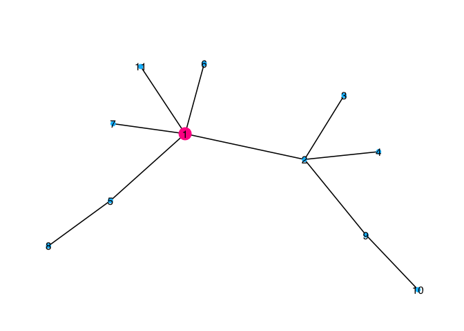
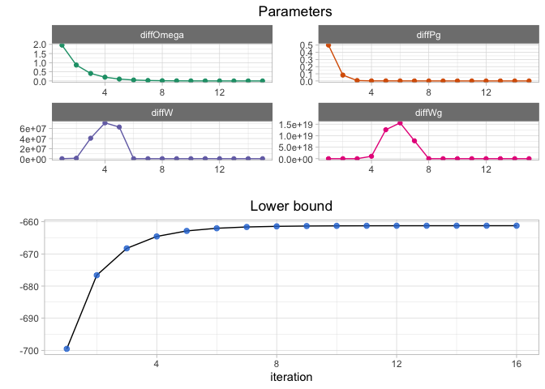

nestor The goal of nestor is to infer network of species conditional dependencies from abundances while accounting for possible missing actors in the data.
Installation
You can install the development version from GitHub with:
install.packages("devtools") devtools::install_github("Rmomal/nestor")
Example
library(nestor) library(tibble) set.seed(7) data=missing_from_scratch(n=100,p=10,r=1,type="scale-free", plot=TRUE)

PLNfit<-norm_PLN(data$Y) #> #> Initialization... #> Adjusting a PLN model with full covariance model #> Post-treatments... #> DONE! MO<-PLNfit$MO SO<-PLNfit$SO sigma_obs=PLNfit$sigma_obs data$TC #> [[1]] #> [1] 1 4 5 6 10 #-- find initial clique findclique= boot_FitSparsePCA(scale(MO),B=100,r=1, cores=3) initClique=findclique$cliqueList #-- initialize the VEM initList=initVEM(data$Y,cliqueList=initClique[[1]],sigma_obs, MO,r=1 ) #-- run one clique from cliqueList fit=nestor(data$Y, MO,SO, initList=initList,alpha=0.1,eps=1e-4, maxIter=30, trackJ=FALSE) #> #> Iter n°1 sumP=1.78e-14 #> Iter n°2 sumP=4.28e-12 #> Iter n°3 sumP=-1.3e-12 #> Iter n°4 sumP=-8.3e-12 #> Iter n°5 sumP=-1.56e-11 #> Iter n°6 / range(P-1>0)= 3e-13 ; 3e-13 / sumP=-3.25e-12 #> Iter n°7 sumP=-1.76e-12 #> Iter n°8 sumP=1.42e-12 #> Iter n°9 sumP=-9.14e-12 #> Iter n°10 sumP=-1.93e-12 #> Iter n°11 / range(P-1>0)= 1e-12 ; 1e-12 / sumP=1.16e-12 #> Iter n°12 / range(P-1>0)= 2e-12 ; 2e-12 / sumP=2.34e-12 #> Iter n°13 sumP=2.34e-13 #> Iter n°14 / range(P-1>0)= 2e-12 ; 2e-12 / sumP=2.84e-13 #> Iter n°15 / range(P-1>0)= 2e-12 ; 2e-12 / sumP=4.18e-12 / range(P-1>0)= 2e-16 ; 3e-12 / sumP=8.25e-12 #> nestor ran in 1.056secs and 15 iterations. #> Final weights difference: 0 plotPerf(fit$Pg, data$G,r=1)

plotConv(nestorFit = fit)

# run all cliques
# fitList=List.nestor(initClique, data$Y,sigma_obs, MO,SO,r=1,eps=1e-4, alpha=0.1)
# do.call(rbind,lapply(fitList, function(vem){
# c(auc=auc(vem$Pg, data$G), J=tail(vem$lowbound$J,1))
# })) %>% as_tibble() %>% ggplot(aes(J,auc))+geom_point()+theme_light()